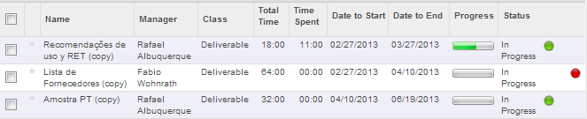
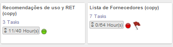
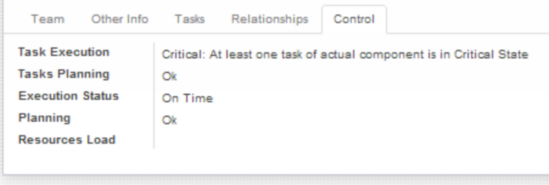

Control de Entregables |
  
|
Control de Entregables |
|
Independientemente de la vista, se mostrara en cada proyecto un semáforo, Verde, Amarillo o Rojo según el estado del mismo.


A continuación se describen los colores y las advertencias posibles:
•Overall status: Es el mostrado en la vista kanban o lista del proyecto
oRed, Critical: Al menos una alarma de este entregable esta en estado Critical state,
oYellow, 'Warning: Al menos una alarma de este entregable esta en estado Warning state
oGreen, Ok,
En la vista formulario, en la solapa Control se describirá el detalle del estado.

•Task execution:
oRed, Critical: Al menos una tarea del actual entregable esta en estado Critical State,
oYellow, Warning: At least one task of actual component is in Warning State
oGreen, Ok,
•Task planning
oRed, Critical: End Date de este entregable es posterior que la Late Finish Date de este entregable.
oYellow, Warning: End Date de este entregable es posterior que la Date to End de este entregable.
oGreen, Ok,
Nota: Tasks Planning representa si la planificación de tareas de este entregable esta alineada con las restricciones de este entregable.
•Execution Status
oRed, Critical Delay: El ejecutable no esta terminado y la fecha actual es posterior que la fecha "Late Finish Date"
oYellow, Delay: El ejecutable no esta terminado y la fecha actual es posterior que la fecha "Date to End"
oGreen, On Time,
Nota:
"Late Finish Date" es la ultima fecha posible que el entregable se puede finalizar sin retrazar el proyecto.
"Date to End" es la fecha en la que deberia terminar el entregable.
•Planning
oRed, Error: El entregable no puede ser planificado con las actuales restricciones.
oGreen, Ok
Nota:
Restrictions could be predecessors, successors, earliest start date and/or latest finish date)"),
•Resources load:
oRed, Overloaded: Al menos uno de los miembros de este Proyecto esta sobrepasado, Overloaded
oYellow, Near limit: Al menos uno de los miembros de este Proyecto esta cerca de estar sobrepasado, Overloaded
oGreen, Ok,
Nota:
Se puede ver el detalle de la carga de trabajo del recurso en el item de menu 'Resources'.
La carga de trabajo tiene en cuenta, para cada usuario, las horas pendientes en tareas asignadas al usuario contra las tareas efectivas disponibles.
Effective available hours takes in account holidays, leaves, working time and efficiency factor of the resource.